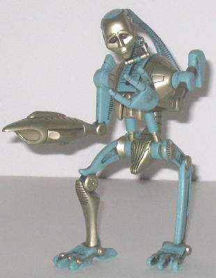

(NOTE: Because this is a repaint, this is not a full-blown review. This mainly covers any changes made to the mold and the color scheme, and merely compares it to the original Beast Wars Rattrap Transmetal. For a review on the mold itself, read the review of the original Beast Wars Rattrap Transmetal here .)
Unlike the other Beast
Wars 10th Anniversary repaints, Rattrap's re-release is not of his original
form, but of his Transmetal version. This is likely because A. Rattrap
Transmetal is a deluxe-sized toy, and the
original
Rattrap
is not, and B. The mold for the original Rattrap toy is lost.
(Didn't stop Hasbro from including a DVD with him that stars him in his
original form anyways-- le sigh.) Anyways, 10th Anniversary Rattrap is
almost unchanged when compared to his original Transmetal version. The
only differences are that the light gray plastic has been made a shade
or two lighter on this version, and the robot optics are show-accurate
red, not green anymore. Plus, he has a new Maximal symbol painted on the
left side of his chest. Other than that, he's the same.
No mold changes have
been made to 10th Anniversary Rattrap.
The new version of Rattrap
is a decent buy if you A. Like the character or B. Don't have the original
version of this mold, but otherwise, there's better toys out there for
your money.
Transmutate

Allegiance
: None
Color Scheme
: Metallic silverish
gold, light pale greenish blue, and some dull red and charcoal black
Rating
:
4.7
Put together from the parts of all six of the Series I 10th Anniversary figures, it's kind of hard to really recommend Transmutate as a good TOY-- he really has more value for fans of the character or the Beast Wars series than as an actual, playable toy. Reason being, Transmutate can't transform, he looks weird (as is the point, obviously), and he has limited articulation. He can move at a ball joint at the base of the neck, and back and forth at the shoulders, and at the left hip, but that's it. Yes, that's right-- due to an incredibly stupid design decision, Transmutate CANNOT move at the right hip. Try to move him there and you will break the leg off, despite the fact that it looks like it can move there. So overall, I'm not really recommending unless you really have a thing for the character, given his low playability and what you have buy in order to complete him.
No Stats
Review by Beastbot